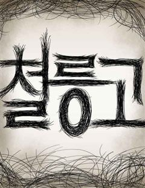

재활용 머학생 같은 웹툰 추천

재활용 머학생 · 수레기
재활용 머학생 재밌게 봤다면 이 웹툰들도 좋아할 거예요. 같은 장르이면서 청춘, 미스터리, 개그 같은 요소가 겹치는 작품을, 겹치는 요소가 많은 순서로 20개 골랐어요.
2026-10-08 기준 · 네이버웹툰·카카오웹툰·레진코믹스 · 성인 작품 제외
내 취향으로 직접 골라 추천받기 →-
1
 네이버웹툰
네이버웹툰성북구 비둘기 이헌서
하루 아침에 비둘기가 되어버린 대학생 '이헌서'(여/24) 다시 인간으로 돌아갈 방법을 찾지 못한 헌서는 당분간 같은 동네 남사친 '반휘혈'의 집에 머물며 비둘기 생활을 이어나가게 되는데... 어떤가요 이헌서양, 비둘기 생활 재미있나요?
청춘개그일상·개그네이버웹툰에서 보기 → -
2
 네이버웹툰
네이버웹툰내 여자친구는 이세계 용사?!
같은 반 친구 윤리나를 짝사랑하던 이재이. 큰 용기를 내어 고백하지만 대답을 듣지 못하고, 다음날 리나를 다시 만나지만 리나는 다른 사람처럼 변해 있었다…?
청춘일상·개그네이버웹툰에서 보기 → -
3
 네이버웹툰
네이버웹툰냥냥찍찍!
햄스터로 변하는 여자 금해미, 고양이로 변하는 남자 고우영. 저주를 풀기 위해선 스킨십을 해야 한다?! 고양이와 햄스터의 아찔한 코믹 풀충전 캠퍼스 로맨스!
청춘개그일상·개그네이버웹툰에서 보기 → -
4
 카카오웹툰
카카오웹툰퀴퀴한 일기
내 주변에 반드시 한 명은 있을 것만 같은, 어쩌면 나 같기도 한 그녀의 일기. 어느덧 40대의 아기 엄마가 된 주인공 이보람과 그의 군단들의 이야기이다. 너무나 시시하고 쩨쩨해서 누구에게 털어놓기도 멋쩍은 일들이 작은 마음을 가진 그들에겐 늘 뜨겁…
개그일상·개그카카오웹툰에서 보기 → · 퀴퀴한 일기 같은 웹툰 → -
5
 카카오웹툰
카카오웹툰슬프게도 이게 내 인생
"벌어먹고 살아야 하는 현생은 너무 힘들어!" 거친 현대사회에서 이리저리 치이며 어떻게든 적응해보려는 어리바리 슬이와 쉽지 않은 직장 생활에 약간 돌아버린 친구들의 슬프지만 즐겁게 살려고 노력하는 이야기
개그일상·개그카카오웹툰에서 보기 → · 슬프게도 이게 내 인생 같은 웹툰 → -
6
 카카오웹툰
카카오웹툰극한견주 시즌2
약 먹기 싫어! 병원 가기 싫어! 내가 좋아하는 것만 하면서 살 거야! 9살 솜이, 어엿한 중년견이 되었으니 모든 게 순조로울 줄 알았다. B.U.T 우끼빡기도 안 하고, 미사일 발사도 안 하지만 어쩐지… 지능캐가 되어버렸다고나 할까? 그렇다고 물러…
개그일상·개그카카오웹툰에서 보기 → · 극한견주 시즌2 같은 웹툰 → -
7
 카카오웹툰
카카오웹툰반지하셋방
밝지만 엉뚱한 첫째와 무뚝뚝한 둘째, 인간 비타민 셋째까지. 청각장애인 어머니와 막노동꾼 아버지 밑에서 가난하게 자라났지만 밝고 유쾌하게 살아가는 세 자매. 그 세 자매 중 첫째와 둘째가 독립을 결심했다! 하지만 독립자금이 모자란 두 사람은 반지하에…
개그일상·개그카카오웹툰에서 보기 → · 반지하셋방 같은 웹툰 → -
8
 네이버웹툰
네이버웹툰구야는 신입
평생 학생일 줄 알았던 내가 어느새 직장인이 되어버렸다. 직장인이 된 기쁨도 잠시... 이제는 일하다가 몰래 잡코리x만 뒤져보는 직장인이 되어버렸다는데... 사회초년생 구야의 웃픈(?) 홀로서기
청춘개그일상·개그네이버웹툰에서 보기 → -
9
 레진코믹스
레진코믹스부랄친구
낭랑 18세의 지은은 길건너 옆집에 사는 민철과 10년도 더 된 부랄친구다. 남녀사이에 친구는 없다지만 꾸준히 둘은 친구임을 주장하고 있기를 10여년.. 하지만 아침에 함께 등교, 하교도 같이, 아프면 병문안, 놀러갈 때도 단둘이.. 이런 둘이 정말…
개그일상·개그레진코믹스에서 보기 → -
10
 카카오웹툰
카카오웹툰웹툰 작가가 리뷰어로 빙의한 건에 대해
웹툰을 리뷰하는 웹툰 작가가 있다?! 웹툰은 많은데 뭘 볼지 몰라 고민되는 분들은 여기 주목! 카카오페이지의 재밌는 작품들을 빨루가 리뷰해드립니다. 빨루의 리뷰 웹툰으로 당신만의 취향저격 웹툰을 찾아보세요!
개그일상·개그카카오웹툰에서 보기 → -
11
 네이버웹툰
네이버웹툰방구석 재민이
"게임 좀 작작하고 밖에 가서 좀 놀아라!" 바깥보다 집 안이 더 편하고, 스포츠보다 게임이 더 즐거운 방구석 사람들, 어디든 게임이랑 인터넷만 할 수 있다면 그것만으로도 족하다! 오늘도 내 잔잔한 일상을 지키기 위해, 방구석에서 벌어지는 스펙터클한…
개그일상·개그네이버웹툰에서 보기 → -
12네이버웹툰
1등을 위해
전교 2등이라서 싫어, 전교 2등이라서 필요해! 전교 1등 짝남이 내 험담을 하는 것을 들어버렸다? 그 이유는 내가 해맑은(얄미운) 전교 2등이라서! 하지만 나는 네가 좋은걸? 성적은 우리 사이에 장벽이 될 수 없어! 1등이랑 2등 사이에 경쟁 NO…
청춘개그일상·개그네이버웹툰에서 보기 → -
13
 네이버웹툰
네이버웹툰내 남자친구는 고양이다옹
재벌 2세인 내 남자친구가 냥냥증후군에 걸렸다고? 고양이처럼 행동하는 병에 걸린 내 남친 고양준. 하지만…고양이가 돼도 나를 좋아하는 건 여전히 똑같은데? 고양이인 걸 들켜서도, 사내연애도 들켜서는 안된다! 고양이 같은 짐승(남)과 펼쳐지는 좌충우돌…
개그일상·개그네이버웹툰에서 보기 → -
14
 네이버웹툰
네이버웹툰너의 완두콩을 먹고 싶어!
평범한 여학생 ‘옥수연’은 정수리 머리카락이 위로 솟아있는 게 콤플렉스다. 어느 날 전학생이 왔는데...완두콩 혼혈이라고?! 근데 뭐? 나도 채소인간이라고?!
개그일상·개그네이버웹툰에서 보기 → -
15

-
16

-
17

네이버웹툰철릉고등학교
두발규제가 삼엄하다못해 철통같은 철릉고등학교. 두발규정을 어기는 순간 교사들의 바리깡이 춤을 춘다. 이런 억압 속에서, 머리가 막장으로 긴 문제아 ‘전학생’과 바리깡이 통하지 않는 ‘권기수’는 교칙을 바꾸고 자유를 되찾기 위해 싸운다.
개그일상·개그네이버웹툰에서 보기 → -
18
 네이버웹툰
네이버웹툰애무지구
넓고 넓은 우주 어딘가 우리가 살고 있는 지구와 똑같은 모습을 한 또 다른 지구가 존재한다. 그곳은 바로 애무지구. 애무지구의 인간들은 사랑을 하지 않는다. 이곳에서 사랑은 질병이며 사랑을 유발하는 모든 행위는 불법이다. 이런 애무지구에 어느 날부터…
개그일상·개그네이버웹툰에서 보기 → -
19

-
20
 네이버웹툰
네이버웹툰생활의 참견 2 : 지금은 가족시절
쉽게 지나치는 일상과 지나간 추억 속에서 발견하는 유쾌한 웃음, 자라난 아이들과 더욱 강력해진 케미로 그가 돌아왔다!
개그일상·개그네이버웹툰에서 보기 →